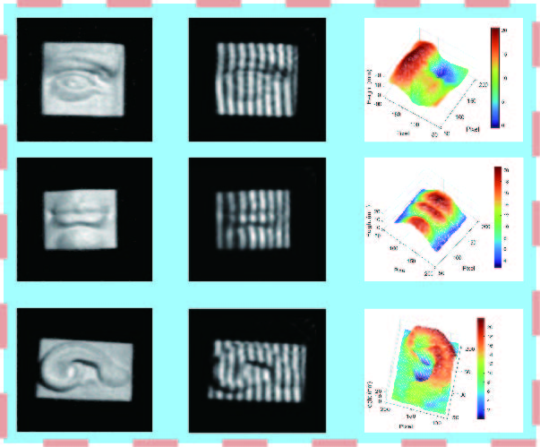

|
|
I am a professor (教授/博导) in the State Key Lab of CAD&CG, Zhejiang University. I am also a recipient of Excellent Young Scholars (国家优青), NSF-China.
My research interest lies in the acquisition and reconstruction of physical information, including complex high-dimensional appearance, 3D surfaces and volumes.
I received my Ph.D. from Dept. of Computer Science, Yale University, under the supervision by Prof. Julie Dorsey and Prof. Holly Rushmeier. Prior to that, I obtained my B.Sc. from Dept. of Computer Science and Engineering, Fudan University. I was also a visiting student in Internet Graphics Group at Microsoft Research Asia.
Professional Services
Editorial Board of IEEE TVCG, Journal of CAD&CG and VCIBA.Program Committee Member for SIGGRAPH/SIGGRAPH Asia, EG, VR, EGSR, PG, I3D, HPG, CVM and CAD/Graphics.
Reviewer for ACM TOG, IEEE TVCG, CGF, Science China, SIGGRAPH/SIGGRAPH Asia, EG, EGSR, PG, AAAI, C&G.
Conflict-of-Interest(COI) Coordinator for SIGGRAPH/SIGGRAPH Asia.
Reviewer for General Program, NSF China and ISF-NSFC Joint Scientific Research Program.
Secretary of Program Chair, Chinagraph.
Secretary for International Cooperation and Exchange Working Committee, China Society of Image and Graphics.
To Prospective Students
I leverage the knowledge from multiple fields to solve challenging problems in
computer graphics and vision. This involves a lot of different cool things,
including software & hardware programming, and mechanical design. I am looking for talented students with a strong background in one or more of the following fields:
1. Computer Graphics and Vision.
2. Optics.
3. Electrical Engineering.
4. Mechanics/Robotics.
I am open to various ways of engaging in my lab, from being an advisor for your master/PhD study, to a research advisor for your undergraduate study, or just doing a summer intern. Please drop me an email to schedule a meeting, if you are interested in working with me.
Teaching
Computer Graphics (2015-F, 2016-S/F, 2017-S/F, 2018-S/F, 2019-F, 2020-F, 2021-F, 2022-F, 2023-F, 2024-F)
Intelligent Acquisition of Visual Information (2019-F, 2020-F, 2021-F, 2022-F, 2023-F, 2024-F) For students who are unable to register my course due to limited
capacity, please make sure that you select the course in the second round of
registration (补选) and see me in the first class. Please register
the course according to your curriculum (培养计划). For computer science major, please take the
course when you are at least a
junior student (大三), as this course requires the
knowledge from a variety of fundamental courses.
Selected Publications
|  | : 3D single pixel imaging based on parallel measurement with quadrant
detector Baolin Wang#, XueJing Shi, Cheng Zhou*, Binyu Li, Xuan Liu, Xinwei Li, Jipeng Huang*, and Lijun Song To appear in Optics and Lasers in Engineering 2025. |
Alumni
Note